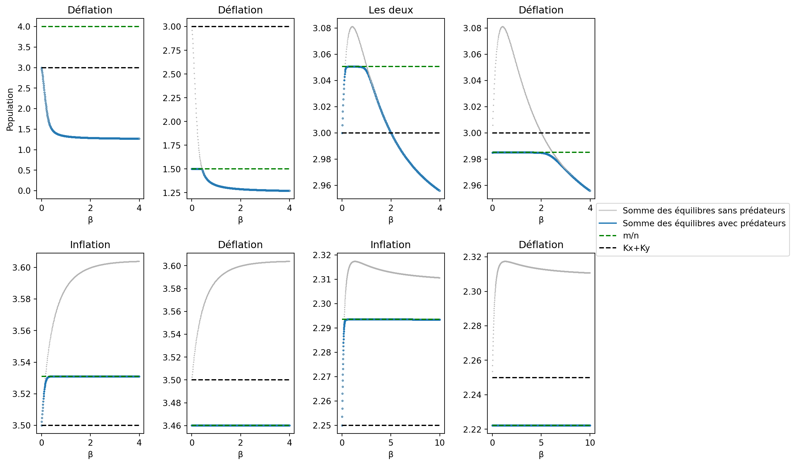

Code
import numpy as np
import matplotlib.pyplot as plt
from scipy.integrate import odeint
import plotly.express as pxModules à importer :
import numpy as np
import matplotlib.pyplot as plt
from scipy.integrate import odeint
import plotly.express as pxCe modèle est un modèle de prédation de Lotka-Volterra où les proies se répartissent en deux structures et les prédateurs diffusent librement entre les deux strcutures.
Nous partirons pour être plus général du postulat que la prédation et les naissances sont diférentielles entre les structures mais certaines analyses se baseront sur une égalité des naissances par exemple.
Nous considérons le modèle suivant d’après Freedman (1977):
\left\{\begin{array}{l} \dot x = r_xx\left(1-\frac{x}{K_x}\right)+\beta\left(\frac{y}{\gamma_y}-\frac{x}{\gamma_x}\right)-p_xxz \\ \dot y = r_yy\left(1-\frac{y}{K_y}\right)+\beta\left(\frac{x}{\gamma_x}-\frac{y}{\gamma_y}\right)-p_yyz \\ \dot z = z\left(n_xx+n_yy - m\right) \end{array}\right. \tag{1}
avec:
- r_x le taux de croissance de x dans la culture,
- r_y le taux de croissance de y dans l’augmentorium,
- K_x la capacité maximale de la culture,
- K_y la capacité maximale de l’augmentorium,
- \beta la force de migration,
- \gamma_x le taux d’assymétrie de la migration culture vers augmentorium,
- \gamma_y le taux d’assymétrie de la migration augmentorium vers culture,
- p_x,p_y la prédation de z sur x ou y,
- n_x,n_y le taux de conversion proie prédateur dans la culture ou l’augmentorium (naissance due à la prédation),
- m la mortalité des prédateurs z.
On a donc maintenant un espace structuré en deux zones, s’échangeant assymétriquement de la population (qui grandit logisitiquement), le tout controlé par une population de prédateurs ne chassant et ne se reproduisant pas de la même manière dans les deux zones.
On pose p_y > p_x et n_y>n_x.
En effet l’augmentorium est un lieu propice au développement des individus que ce soit les prédateurs ou les ravageurs.
Ainsi la prédation exercé sur les ravageurs est plus forte dans l’augmentorium et les naissances des prédateurs sont plus fortes dans l’augmentorium que dans la culture.
On va encore une fois simuler comment se comporte les trois populations en fonction du temps.
Le code commenté est acessible dans la boite cachée ci dessous:
#Définition du modèle avec prédateurs:
def a(etat,t,param):
x,y,z=etat
rx,Kx,ry,Ky,gx,gy,b,px,py,nx,ny,m = param
xdot,ydot,zdot=[rx*x*(1-x/Kx)+b*(y/gy-x/gx)-px*z*x,ry*y*(1-y/Ky)+b*(x/gx-y/gy)-py*y*z,z*(nx*x+ny*y-m)]
return [xdot,ydot,zdot]
#Paramètres Simulation 1 :
rx1=0.5
ry1=1
Kx1=2
Ky1=1
gx1=0.5
gy1=3
b1=1
px1=0.5
py1=1
nx1=0.5
ny1=1
m1=0.5
param_a1=np.array([rx1,Kx1,ry1,Ky1,gx1,gy1,b1,px1,py1,nx1,ny1,m1])
#Paramètres Simulation 2:
rx2=0.5
ry2=1
Kx2=2
Ky2=1
gx2=0.5
gy2=3
b2=1
px2=0.5
py2=1
nx2=0.5
ny2=1
m2=2
param_a2=np.array([rx2,Kx2,ry2,Ky2,gx2,gy2,b2,px2,py2,nx2,ny2,m2])
#Temps d'intégration 1,2:
t3=np.arange(0,200,0.01)
t4=np.arange(0,50,0.01)
#Condition initiale de 1,2:
x0=2
y0=0
z0=0.5
c0=np.array([x0,y0,z0])
#Simulation 1,2:
s3=odeint(a,c0,t3,args=(param_a1,))
s4=odeint(a,c0,t4,args=(param_a2,))
#Plot de la figure:
fig,ax = plt.subplots(1,2,figsize=(14,5))
fig.suptitle('Simulation du modèle d\'augmentorium')
plt.subplots_adjust(hspace=0.4)
#Plot de l'axe 1:
ax[0].plot(t3,s3[:,0],color='C0',label='Ravageurs dans la culture')
ax[0].plot(t3,s3[:,1],color='C1',label='Ravageurs dans l\'augmentorium')
ax[0].plot(t3,s3[:,2],color='C6',label='Prédateurs totaux')
#Plot de l'axe 2:
ax[1].plot(t4,s4[:,0],color='C0',label='Ravageurs dans la culture')
ax[1].plot(t4,s4[:,1],color='C1',label='Ravageurs dans l\'augmentorium')
ax[1].plot(t4,s4[:,2],color='C6',label='Prédateurs totaux')
#Légendes et titres:
ax[0].set_ylabel('Population, x,y,z')
ax[0].legend(fontsize=8)
ax[0].grid()
ax[0].set_xlabel('Temps, t')
ax[0].set_ylim(top=2,bottom=-0.05)
ax[0].set_title('Coexistence des trois populations',fontsize=7.5)
ax[1].set_xlabel('Temps, t')
ax[1].set_ylabel('Population, x,y,z')
ax[1].legend(fontsize=8)
ax[1].grid()
ax[1].set_ylim(top=2,bottom=-0.05)
ax[1].set_title('Disparition des prédateurs, maintien des ravageurs',fontsize=7.5)Text(0.5, 1.0, 'Disparition des prédateurs, maintien des ravageurs')
Les profils de dynamique se répartissent en deux grandes catégories. Ceux où la population de prédateurs survit et celle où elle disparaît. Il semble donc il y a voir deux équilibres stables dans ce système.
Pour de faibles temps t on observe des oscillations à la Lotka-Volterra.
Le profil de la dynamique de la population sans prédateurs est similaire au modèle avec seulement les proies et la migration assymétrique. On verra dans la suite que ces deux modèles sont complètement confondus (sans prédateurs).
Pour tracer le plan de phase on pose toutes les variations égales à 0 (situation d’équilibre) :
\left\{\begin{array}{l} 0 = r_xx^*\left(1-\frac{x^*}{K_x}\right)+\beta\left(\frac{y^*}{\gamma_y}-\frac{x^*}{\gamma_x}\right)-p_xx^*z^* \\ 0 = r_yy^*\left(1-\frac{y^*}{K_y}\right)+\beta\left(\frac{x^*}{\gamma_x}-\frac{y^*}{\gamma_y}\right)-p_yy^*z^* \\ 0 = z^*\left(n_xx^*+n_yy^* - m\right) \end{array}\right. \tag{2}
qui devient :
\left\{\begin{array}{l}
z^* = \frac{r_x}{p_x}\left(1-\frac{x^*}{K_x}\right)+\frac{\beta}{p_xx^*}\left(\frac{y^*}{\gamma_y}-\frac{x^*}{\gamma_x}\right)\\
z^* = \frac{r_y}{p_y}\left(1-\frac{y^*}{K_y}\right)+\frac{\beta}{p_yy^*}\left(\frac{x^*}{\gamma_x}-\frac{y^*}{\gamma_y}\right)\\
z^*=0 \lor n_xx^*+n_yy^*=m
\end{array}\right.
\tag{3}
On se retrouve avec deux surfaces et deux plans dont les intersections seront les équilibres. Voyons ceci avec une animation :
import IPython.display as display
fig01 = """
<iframe width="700" height="550" src="https://www.geogebra.org/classic/bw3wqnzg" style="border: 1px solid black"></iframe>
"""
display.HTML(fig01)En vert on a l’intersection entre la surface définie par \dot x =0 et les plans z=0 et n_xx+n_yy=m.
En rouge on a l’intersection entre la surface définie par \dot y =0 et les plans z=0 et n_xx+n_yy=m.
On a donc que l’intersetion des courbes vertes et rouges sont les équilibres. Il est facile de voir qu’il n’en existe que trois différents dont un seul correspond à la coexistence des trois populations.
Si z=0 alors (1) devient:
\left\{\begin{array}{l}
\dot x = r_xx(1-\frac{x}{K_x})+\beta\left(\frac{y}{\gamma_y}-\frac{x}{\gamma_x}\right)\\
\dot y = r_yy(1-\frac{y}{K_y})+\beta\left(\frac{x}{\gamma_x}-\frac{y}{\gamma_y}\right)
\end{array}\right.
\tag{4}
qui est exactement le système considéré précedemment. Pour l’analyse de ses équilibres se référer à ceci.
On va donc s’intéresser uniquement à l’équilibre de coexistence qu’on notera (x^* , y^* , z^*).
Nous allons calculer pour différentes valeurs de \beta les valeurs de l’équilibre.
(2) devient :
\left\{\begin{array}{l}
0 = r_xx^*\left(1-\frac{x^*}{K_x}\right)-p_xx^*z^* \\
0 = r_yy^*\left(1-\frac{y^*}{K_y}\right)-p_yy^*z^* \\
0 = z^*\left(n_xx^*+n_yy^* - m\right)
\end{array}\right.
\tag{5}
\Leftrightarrow
\left\{\begin{array}{l}
z^* = \frac{r_x}{p_x}\left(1-\frac{x^*}{K_x}\right) \\
z^* = \frac{r_y}{p_y}\left(1-\frac{y^*}{K_y}\right) \\
y^* = \frac{1}{n_y}\left(m-n_xx^*\right)
\end{array}\right.
\tag{6} et ainsi :
\frac{r_x}{p_x}\left(1-\frac{x^*}{K_x}\right) = \frac{r_y}{p_y}\left(1-\frac{m}{n_yK_y}+\frac{n_xx^*}{n_y}\right)
et donc :
x^*=\frac{K_x\left(r_yp_xm+r_xn_yp_yK_y-r_yn_yp_xK_y\right)}{r_xn_yp_yK_y+r_yn_xp_xK_x}
On déduit y^* et z^* avec leur définition d’après (6): \left\{\begin{array}{l} x^* = \frac{K_x\left(r_yp_xm+r_xn_yp_yK_y-r_yn_yp_xK_y\right)}{r_xn_yp_yK_y+r_yn_xp_xK_x} \\ y^* = \frac{K_y\left(r_yn_xp_xK_x+r_xp_ym - r_xn_xp_yK_x\right)}{r_xn_yp_yK_y+r_yn_xp_xK_x} \\ z^* = r_xr_y\left(\frac{n_xK_x+n_yK_y-m}{r_xn_yp_yK_y+r_yn_xp_xK_x}\right) \end{array}\right. \tag{7}
Le document de Freedman (1977) contient deux erreurs, un B_1 à la place d’un \beta_1 dans l’expression de y^* (respectivement x_{20} dans son article) et un p_y à la place d’un p_x dans l’expression de z^* (respectivement un \beta_2 à la place d’un \beta_1 selon ses notations).
Pour que ces équilibres soient positifs il faut que :
-\frac{mr_y}{K_yn_yp_y} < \frac{r_x}{p_x} - \frac{r_y}{p_y} < \frac{mr_x}{K_xn_xp_x} \tag{8}
et
n_xK_x+n_yK_y > m \tag{9}
On verra dans la suite que la condition (9) est l’invasion des prédateurs.
Pour \beta petit on va utiliser l’égalité de Taylor pour trouver (x_*,y^*,z^*). On a alors, si on note (x^*(\beta),y^*(\beta),z^*(\beta)):
\left\{\begin{array}{l} x^*(0) = \frac{K_x\left(r_yp_xm+r_xn_yp_yK_y-r_yn_yp_xK_y\right)}{r_xn_yp_yK_y+r_yn_xp_xK_x}\\ y^*(0) = \frac{K_y\left(r_yn_xp_xK_x+r_xp_ym - r_xn_xp_yK_x\right)}{r_xn_yp_yK_y+r_yn_xp_xK_x}\\ z^*(0) = r_xr_y\left(\frac{n_xK_x+n_yK_y-m}{r_xn_yp_yK_y+r_yn_xp_xK_x}\right) \end{array}\right. \\
Soit \mathbb{F(x,y,z,\beta)} tel que : \mathbb{F(x,y,z,\beta)} = \left\{\begin{array}{l} r_xx\left(1-\frac{x}{K_x}\right)+\beta\left(\frac{y}{\gamma_y}-\frac{x}{\gamma_x}\right)-p_xxz \\ r_yy\left(1-\frac{y}{K_y}\right)+\beta\left(\frac{x}{\gamma_x}-\frac{y}{\gamma_y}\right)-p_yyz \\ z\left(n_xx+n_yy - m\right) \end{array}\right. \\ On veut ainsi résoudre : \mathbb{F\left(\mathcal{x}^*(\beta) , \mathcal{y}^*(\beta) , \mathcal{z}^*(\beta) , \beta\right)}=0
or, d’après la formule de Taylor on a à l’ordre 1 en dimension 4 on a:
\mathbb{F\left(\mathcal{x}^*(\beta) , \mathcal{y}^*(\beta) , \mathcal{z}^*(\beta) , \beta\right)}=\mathbb{F\left(\mathcal{x}^*(\mathcal{0}) , \mathcal{y}^*(\mathcal{0}) , \mathcal{z}^*(\mathcal{0}) , \mathcal{0}\right)} + \\ \frac{\partial \mathbb{F}}{\partial \beta}\left(\mathcal{x}^*(\mathcal{0}) , \mathcal{y}^*(\mathcal{0}) , \mathcal{z}^*(\mathcal{0}) , \mathcal{0}\right)\beta + \mathbb{J}\tiny{\mathbb{F\left(\mathcal{x}^*(\mathcal{0}) , \mathcal{y}^*(\mathcal{0}) , \mathcal{z}^*(\mathcal{0}) ,\mathcal{0}\right)}}\small\begin{pmatrix} \mathcal{x}^*(\beta) - \mathcal{x}^*(\mathcal{0}) \\ \mathcal{y}^*(\beta) - \mathcal{y}^*(\mathcal{0}) \\ \mathcal{z}^*(\beta) - \mathcal{z}^*(\mathcal{0}) \end{pmatrix} + o(\beta) \tag{10} \Leftrightarrow \begin{pmatrix} \mathcal{x}^*(\beta) \\ \mathcal{y}^*(\beta) \\ \mathcal{z}^*(\beta) \end{pmatrix} = \begin{pmatrix} \mathcal{x}^*(\mathcal{0}) \\ \mathcal{y}^*(\mathcal{0}) \\ \mathcal{z}^*(\mathcal{0}) \end{pmatrix} - \mathbb{J^{\mathcal{-1}}}\tiny{\mathbb{F\left(\mathcal{x}_2^*(\mathcal{0}) , \mathcal{y}^*(\mathcal{0}) , \mathcal{z}^*(\mathcal{0}) ,\mathcal{0}\right)}} \small\frac{\partial \mathbb{F}}{\partial \beta}\left(\mathcal{x}^*(\mathcal{0}) , \mathcal{y}^*(\mathcal{0}) , \mathcal{z}^*(\mathcal{0}) , \mathcal{0}\right)\beta + o(\beta)
On a, \frac{\partial \mathbb{F}}{\partial \beta}\left(\mathcal{x}^*(\mathcal{0}) , \mathcal{y}^*(\mathcal{0}) , \mathcal{z}^*(\mathcal{0}) , \mathcal{0}\right)\beta = \begin{pmatrix} -\frac{\mathcal{x}^*(\mathcal{0})}{\gamma_x}+\frac{\mathcal{y}^*(\mathcal{0})}{\gamma_y}\\\frac{\mathcal{x}^*(\mathcal{0})}{\gamma_x}-\frac{\mathcal{y}^*(\mathcal{0})}{\gamma_y}\\ 0\end{pmatrix} .
et, \mathbb{J}\small{\mathbb{F\left(\mathcal{x}^*(\mathcal{0}) , \mathcal{y}^*(\mathcal{0}) , \mathcal{z}^*(\mathcal{0}) ,\mathcal{0}\right)}} = \begin{pmatrix} -\frac{r_xx^*(0)}{K_x} & 0 & -p_xx^*(0) \\ 0 & -\frac{r_yy^*(0)}{K_y} & -p_yy^*(0) \\ n_xz^*(0) & n_yz^*(0) & 0 \end{pmatrix}
il est alors facile de calculer que, det(\mathbb{J}) = -x^*(0)y^*(0)z^*(0)\left(\frac{r_xn_yp_y}{K_x}+\frac{r_yn_xp_x}{K_y}\right) \ne 0
La jacobienne est donc bien inversible et on peut la calculer (méthode des cofacteurs) ce qui donne : \mathbb{J^{\mathcal{-1}}}\tiny{\mathbb{F\left(\mathcal{x}^*(\mathcal{0}) , \mathcal{y}^*(\mathcal{0}) , \mathcal{z}^*(\mathcal{0}) ,\mathcal{0}\right)}} =\small \frac{1}{\frac{r_xp_yn_y}{K_x}+\frac{r_yp_xn_x}{K_y}} \begin{pmatrix} -\frac{p_yn_y}{x^*(0)} & \frac{p_xn_y}{y^*(0)} & \frac{r_yp_x}{z^*(0)K_y} \\ \frac{p_yn_x}{x^*(0)} & -\frac{p_xn_x}{y^*(0)} & \frac{r_xp_y}{z^*(0)K_x} \\ -\frac{r_yn_x}{x^*(0)K_y} & -\frac{r_xn_y}{y^*(0)K_x}& -\frac{r_xr_y}{z^*(0)K_xK_y} \end{pmatrix} \tag{11}
En mettant en œuvre le calcul on trouve : \left\{\begin{array}{l} x^*(\beta) = x^*(0) - \frac{\beta n_yK_xK_y\left(\frac{y^*(0)}{\gamma_y}-\frac{x^*(0)}{\gamma_x}\right)\left(\frac{p_y}{x^*(0)}+\frac{p_x}{y^*(0)}\right)}{K_yr_xp_yn_y + K_xr_yp_xn_x} + o(\beta)\\ y^*(\beta) = y^*(0) - \frac{\beta n_xK_xK_y\left(\frac{y^*(0)}{\gamma_y}-\frac{x^*(0)}{\gamma_x}\right)\left(\frac{p_y}{x^*(0)}+\frac{p_x}{y^*(0)}\right)}{K_yr_xp_yn_y + K_xr_yp_xn_x} + o(\beta)\\ z^*(\beta) = z^*(0) - \frac{\beta K_xK_y\left(\frac{y^*(0)}{\gamma_y}-\frac{x^*(0)}{\gamma_x}\right)\left(\frac{r_xn-y}{y^*(0)K_x}-\frac{r_yn_x}{x^*(0)K_y}\right)}{K_yr_xp_yn_y + K_xr_yp_xn_x} + o(\beta) \end{array}\right.\\ \tag{12}
(2) donne, en exprimant y^* en fonction de x^*: \left\{\begin{array}{l} z^* = \frac{r_x}{p_x}\left(1-\frac{x^*}{K_x}\right) + \frac{\beta}{p_x}\left(\frac{m}{n_y\gamma_y x^*}-\frac{n_x}{n_y\gamma_y}-\frac{1}{\gamma_x}\right) \\ z^* = \frac{r_y}{p_y}\left(1-\frac{m-n_xx^*}{n_yK_y}\right) + \frac{\beta n_y}{p_y}\left(\frac{x^*}{\gamma_x\left(m-n_xx^*\right)}-\frac{1}{n_y\gamma_y}\right) \\ y^* =\frac{1}{n_y}\left(m- n_xx^*\right) \end{array}\right. \tag{13}
On trouve x^* en faisant l’intersection entre les deux premières équations, on trouve y^* avec la troisième équation et z^* avec la première équation.
Pour calculer l’équilibre on utilise numpy:
#Calcul de x*:
x=np.polynomial.Polynomial([0,1])
#Polynome :
pol1= (m1-nx1*x)*x*rx1/px1*(1-x/Kx1) + (m1-nx1*x)*b1/px1*((m1-nx1*x)/(ny1*gy1) - x/gx1) - (m1-nx1*x)*x*ry1/py1*(1-(m1-nx1*x)/(ny1*Ky1)) - x*b1*ny1/py1*(x/gx1 - (m1-nx1*x)/(ny1*gy1))
#On utilise un masque booléen adapté à la situation --> solution réelle, positive et qui vérifie la condtion imposée par la troisième équation du système:
solx=pol1.roots()[(np.isreal(pol1.roots())) *(pol1.roots() > 0)*(pol1.roots()<m1/ny1)]
#Calcul de y*:
soly=1/ny1*(m1-nx1*solx)
#Calcul de z*:
solz=rx1/px1*(1-solx/Kx1) + b1/px1*(m1/(ny1*gy1*solx) -nx1/(ny1*gy1)- 1/gx1)Sans prédateurs (z=0) on a les mêmes équilibres que dans la partie précédente, la stabilité est donc la même que dans la partie précédente.
On va calculer pour différentes valeurs de \beta la stabilité.
La jacobienne du système est: \mathbb{J_{\mathcal{x^*_2},\mathcal{y^*_2},\mathcal{z^*_2},\mathcal{0}}} = \begin{pmatrix} -\frac{r_xx_2^*(0)}{K_x} & 0 & -p_xx_2^*(0) \\ 0 & -\frac{r_yy_2^*(0)}{K_y} & -p_yy_2^*(0) \\ n_xz_2^*(0) & n_yz_2^*(0) & 0 \end{pmatrix}
En calculant le polynôme caractéristique on en déduit que toutes les parties réelles des valeurs propres sont négatives et que donc l’équilibre est stable. La preuve est faite par Freedman dans son théorème 4.1.
\mathbb{J_{\mathcal{x^*},\mathcal{y^*},\mathcal{z^*},\mathcal{\beta}}} = \begin{pmatrix} -\frac{r_xx^*(0)}{K_x} -\frac{\beta}{\gamma_x} & \frac{\beta}{\gamma_y} & -p_xx^*(0) \\ \frac{\beta}{\gamma_x} & -\frac{r_yy^*(0)}{K_y}-\frac{\beta}{\gamma_y} & -p_yy^*(0) \\ n_xz^*(0) & n_yz^*(0) & 0 \end{pmatrix} = \mathbb{J_{\mathcal{x^*},\mathcal{y^*},\mathcal{z^*},\mathcal{0}}} + \beta \begin{pmatrix} -\frac{1}{\gamma_x} & \frac{1}{\gamma_y} & 0 \\ \frac{1}{\gamma_x} & -\frac{1}{\gamma_y} & 0 \\ 0 & 0 & 0 \end{pmatrix}
Comme \beta est petit on a la matrice qui est petite et qui n’influence pas le signe des valeurs propres. Donc l’équilibre est encore stable.
Dans cette partie on va distinguer les cas où n_x = n_y et p_x=p_y de ceux où ils sont différents.
En effet, l’un des postulats de l’augmentorium est que le dévellopement des ravageurs et prédateurs est favorisé dans celui-ci mais on peut supposer que la prédation et les naissances dans l’augmentorium sont égales.
Il est intéressant de considérer la somme des équilibre des proies en fonction de la force de migration (\beta) et les équilibres dans la culture en fonction du taux de fuite (\gamma_y) et du taux de migration (\gamma_x).
Dans ce cas (1) devient :
\left\{\begin{array}{l} \dot x = r_xx\left(1-\frac{x}{K_x}\right)+\beta\left(\frac{y}{\gamma_y}-\frac{x}{\gamma_x}\right)-pxz \\ \dot y = r_yy\left(1-\frac{y}{K_y}\right)+\beta\left(\frac{x}{\gamma_x}-\frac{y}{\gamma_y}\right)-pyz \\ \dot z = z\left(n\left(x+y\right) - m\right) \end{array}\right. \tag{14}
A l’équilibre, on a :
\left\{\begin{array}{l} 0 = r_xx^*\left(1-\frac{x^*}{K_x}\right)+\beta\left(\frac{y^*}{\gamma_y}-\frac{x^*}{\gamma_x}\right)-px^*z^* \\ 0 = r_yy^*\left(1-\frac{y^*}{K_y}\right)+\beta\left(\frac{x^*}{\gamma_x}-\frac{y^*}{\gamma_y}\right)-py^*z^* \\ x^*+y^* = \frac{m}{n} \end{array}\right. \tag{15}
On voit, avec la troisième équation du système, que la somme des équilibres des proies est toujours égale à \frac{m}{n} quelque soit \beta du moment que les prédateurs sont présents.
Intuitivement on considère que la présence d’un équilibre des prédateurs positifs (invasion des prédateurs) est soumise à la condition que pour une population aussi petite soit elle de prédateurs (\beta \to 0) et pour les proies à l’équilibre on ait un taux de croissance positif pour les prédateurs.
Mathématiquement cette assomption est équivalente à la condition, si on note (x_0^*(\beta),y^*_0(\beta)) l’équilibre sans prédateurs pour un taux \beta, que x_0^* + y_0^* > \frac{m}{n} \Leftrightarrow \exists z^* \ne 0.
Pour \beta = 0 on a que s’il existe un équilibre des prédateurs positif alors on a K_x+K_y>\frac{m}{n} par l’égalité (7). Ceci est donc la condition d’invasion des prédateurs (9) mentionnée plus tôt.
Si \beta = \infty on va réduire le système (14) en équation de Lotka-Volterra avec croissance logistique. Ainsi la présence d’un équilibre des prédateurs impliquera la condition d’invasion supposée.
La démarche à partir du système (14) est la suivante :
\dot x - \dot y = r_xx^*\left(1-\frac{x^*}{K_x}\right) - r_yy^*\left(1-\frac{y^*}{K_y}\right) + pz\left(y-x\right) -2\beta \left(\frac{x}{\gamma_x}-\frac{y}{\gamma_y}\right) \tag{16}
Quand \beta \to \infty, \dot x - \dot y devient : \dot x - \dot y = -2\beta \left(\frac{x}{\gamma_x}-\frac{y}{\gamma_y}\right)
et donc on a forcément que \left(\frac{x}{\gamma_x}-\frac{y}{\gamma_y}\right) \to 0 ie que \frac{x}{\gamma_x} = \frac{y}{\gamma_y}.
On pose N = x+y qui est, avec l’assertion précédente, équivalent à \frac{N}{\gamma_x+\gamma_y} = \frac{x+y}{\gamma_x+\gamma_y} = \frac{\frac{x\gamma_x}{\gamma_x}+\frac{y\gamma_y}{\gamma_y}}{\gamma_x+\gamma_y} = \frac{x}{\gamma_x} = \frac{y}{\gamma_y} \tag{17}
On a ainsi : \dot N = \dot x + \dot y = \frac{r_xx\gamma_x}{\gamma_x}\left(1-\frac{x}{K_x}\right) + \frac{r_yy\gamma_y}{\gamma_y}\left(1-\frac{y}{K_y}\right)-pzN \Leftrightarrow \dot N = \frac{r_xN\gamma_x}{\gamma_x+\gamma_y}\left(1-\frac{x}{K_x}\right) + \frac{r_yN\gamma_y}{\gamma_x+\gamma_y}\left(1-\frac{y}{K_y}\right)-pzN \Leftrightarrow \dot N = \left(\frac{r_x\gamma_x+r_y\gamma_y}{\gamma_x+\gamma_y}\right)N\left(1-\frac{\frac{r_x\gamma_x^2}{K_x}+\frac{r_y\gamma_y^2}{K_y}}{(\gamma_x+\gamma_y)^2(r_x\gamma_x+r_y\gamma_y)}N\right)-pzN \tag{18}
En posant r_N = \left(\frac{r_x\gamma_x+r_y\gamma_y}{\gamma_x+\gamma_y}\right) et K_N=\frac{(\gamma_x+\gamma_y)^2(r_x\gamma_x+r_y\gamma_y)}{\frac{r_x\gamma_x^2}{K_x}+\frac{r_y\gamma_y^2}{K_y}} le système devient :
\left\{\begin{array}{l} \dot N = r_NN\left(1-\frac{N}{K_N}\right)-pzN \\ \dot z = z\left(nN - m\right) \end{array}\right. \tag{19}
qui est bien un système de L-V avec croissance logistique.
Si \exists z^* > 0 alors on a N^*=\frac{m}{n}.
De plus, on a : pz^* = r_N\left(1-\frac{N^*}{K_N}\right) et donc si z^*>0 on a N^* < K_N qui est équivalent à \frac{m}{n} < K_N.
Si on considère le système précédent sans prédateurs on a :
\left\{\begin{array}{l} \dot N_0 = r_NN_0\left(1-\frac{N_0}{K_N}\right) \end{array}\right.
et on a donc N_0^* = K_N.
Or, posons la condition mathématique intuitive : x^*_0(+\infty)+y^*_0(+\infty) > \frac{m}{n} \Leftrightarrow \frac{x^*_0(+\infty)\gamma_x}{\gamma_x}+\frac{y^*_0(+\infty)\gamma_y}{\gamma_y} > \frac{m}{n} \Leftrightarrow \frac{N_0^*(+\infty)\gamma_x}{\gamma_x+\gamma_y}+\frac{N^*_0(+\infty)\gamma_y}{\gamma_x+\gamma_y} > \frac{m}{n} \Leftrightarrow K_N > \frac{m}{n}
L’intuition biologique est donc confirmée par des preuves mathématiques.
On va donc tracer les graphes de la somme des équilibres du système (1) avec et sans prédateurs et constater cette saturation à lorsque la condition x_0^* + y_0^* > \frac{m}{n} est validée.
Pour plot on va simuler avec odeint pendant un temps assez large pour atteindre l’équilibre :
#Définition d'une fonction qui prend en compte le changement de migration:
def a(etat,t,param,i):
x,y,z=etat
b=i
rx,Kx,ry,Ky,gx,gy,p,n,m = param
xdot,ydot,zdot=[rx*x*(1-x/Kx)+b*(y/gy-x/gx)-p*z*x,ry*y*(1-y/Ky)+b*(x/gx-y/gy)-p*y*z,z*(n*(x+y)-m)]
return [xdot,ydot,zdot]
#Définition du modèle sans prédateurs:
def aug(etat,t,param,i):
rx,Kx,ry,Ky,gx,gy=param
b=i
x,y=etat
s=[rx*x*(1-x/Kx)+b*(y/gy-x/gx),ry*y*(1-y/Ky)+b*(x/gx-y/gy)]
return s
#Définition des paramètres:
#1:
rx1 = 0.5
ry1 = 1
Kx1 = 2
Ky1 = 1
gx1 = 0.5
gy1 = 3
p1=1
m11=1
n11=0.25
m12=3
n12=2
param11=np.array([rx1,Kx1,ry1,Ky1,gx1,gy1,p1,n11,m11])
param12=np.array([rx1,Kx1,ry1,Ky1,gx1,gy1,p1,n12,m12])
#2:
rx2 = 0.5
ry2 = 1
Kx2 = 2
Ky2 = 1
gx2 = 5
gy2 = 1
p2=1
m21=1
n21=0.3278
m22=1
n22=0.335
param21=np.array([rx2,Kx2,ry2,Ky2,gx2,gy2,p2,n21,m21])
param22=np.array([rx2,Kx2,ry2,Ky2,gx2,gy2,p2,n22,m22])
#3:
rx3 = 1
ry3 = 2
Kx3 = 2
Ky3 = 1.5
gx3 = 2
gy3 = 1
p3=0.5
m31=1
n31=0.2832
m32=1
n32=0.289
param31=np.array([rx3,Kx3,ry3,Ky3,gx3,gy3,p3,n31,m31])
param32=np.array([rx3,Kx3,ry3,Ky3,gx3,gy3,p3,n32,m32])
#4:
rx4 = 2
ry4 = 1
Kx4 = 1
Ky4 = 1.25
gx4 = 0.5
gy4 = 1
p4=1
m41=1
n41=0.436
m42=1
n42=0.45
param41=np.array([rx4,Kx4,ry4,Ky4,gx4,gy4,p4,n41,m41])
param42=np.array([rx4,Kx4,ry4,Ky4,gx4,gy4,p4,n42,m42])
#Temps d'intégration suffisament large pour atteindre l'équilibre:
t=np.arange(0,1000,0.01)
#Condition initiale:
e0=[1,1,1]
#Figure:
fig,ax=plt.subplots(2,4,figsize=(12,9))
plt.subplots_adjust(wspace=0.4,hspace=0.3)
#Boucle pour plot en fonction de beta:
for i in np.arange(0,4,0.01):
s11=odeint(a,e0,t,args=(param11,i)) #On calcule pour chaque beta l'équilibre
ax[0][0].plot(i,s11[-1][0]+s11[-1][1],marker='.',markersize=3,color='C0')
s12=odeint(a,e0,t,args=(param12,i))
ax[0][1].plot(i,s12[-1][0]+s12[-1][1],marker='.',markersize=3,color='C0')
s11sp=odeint(aug,e0[0:2],t,args=(param11[0:6],i))
ax[0][0].plot(i,s11sp[-1][0]+s11sp[-1][1],marker='.',markersize=1,color='0.7')
s12sp=odeint(aug,e0[0:2],t,args=(param12[0:6],i))
ax[0][1].plot(i,s12sp[-1][0]+s12sp[-1][1],marker='.',markersize=1,color='0.7')
s21=odeint(a,e0,t,args=(param21,i))
ax[0][2].plot(i,s21[-1][0]+s21[-1][1],marker='.',markersize=3,color='C0')
s22=odeint(a,e0,t,args=(param22,i))
ax[0][3].plot(i,s22[-1][0]+s22[-1][1],marker='.',markersize=3,color='C0')
s21sp=odeint(aug,e0[0:2],t,args=(param21[0:6],i))
ax[0][2].plot(i,s21sp[-1][0]+s21sp[-1][1],marker='.',markersize=1,color='0.7')
s22sp=odeint(aug,e0[0:2],t,args=(param22[0:6],i))
ax[0][3].plot(i,s22sp[-1][0]+s22sp[-1][1],marker='.',markersize=1,color='0.7')
s31=odeint(a,e0,t,args=(param31,i))
ax[1][0].plot(i,s31[-1][0]+s31[-1][1],marker='.',markersize=3,color='C0')
s32=odeint(a,e0,t,args=(param32,i))
ax[1][1].plot(i,s32[-1][0]+s32[-1][1],marker='.',markersize=3,color='C0')
s31sp=odeint(aug,e0[0:2],t,args=(param31[0:6],i))
ax[1][0].plot(i,s31sp[-1][0]+s31sp[-1][1],marker='.',markersize=1,color='0.7')
s32sp=odeint(aug,e0[0:2],t,args=(param32[0:6],i))
ax[1][1].plot(i,s32sp[-1][0]+s32sp[-1][1],marker='.',markersize=1,color='0.7')
for i in np.arange(0,10,0.01):
s41=odeint(a,e0,t,args=(param41,i))
ax[1][2].plot(i,s41[-1][0]+s41[-1][1],marker='.',markersize=3,color='C0')
s42=odeint(a,e0,t,args=(param42,i))
ax[1][3].plot(i,s42[-1][0]+s42[-1][1],marker='.',markersize=3,color='C0')
s41sp=odeint(aug,e0[0:2],t,args=(param41[0:6],i))
ax[1][2].plot(i,s41sp[-1][0]+s41sp[-1][1],marker='.',markersize=1,color='0.7')
s42sp=odeint(aug,e0[0:2],t,args=(param42[0:6],i))
ax[1][3].plot(i,s42sp[-1][0]+s42sp[-1][1],marker='.',markersize=1,color='0.7')
#Plot de la droite Kx+Ky:
xt=np.arange(0,4,0.01)
xt2=np.arange(0,4,0.01)
xt3=np.arange(0,10,0.01)
ax[0][0].plot(xt,(Kx1+Ky1)*np.ones_like(xt),linestyle='dashed',color='k',markersize='6')
ax[0][1].plot(xt2,(Kx1+Ky1)*np.ones_like(xt2),linestyle='dashed',color='k',markersize='6')
ax[0][2].plot(xt,(Kx2+Ky2)*np.ones_like(xt),linestyle='dashed',color='k',markersize='6')
ax[0][3].plot(xt,(Kx2+Ky2)*np.ones_like(xt),linestyle='dashed',color='k',markersize='6')
ax[1][0].plot(xt2,(Kx3+Ky3)*np.ones_like(xt2),linestyle='dashed',color='k',markersize='6')
ax[1][1].plot(xt,(Kx3+Ky3)*np.ones_like(xt),linestyle='dashed',color='k',markersize='6')
ax[1][2].plot(xt3,(Kx4+Ky4)*np.ones_like(xt3),linestyle='dashed',color='k',markersize='6')
ax[1][3].plot(xt3,(Kx4+Ky4)*np.ones_like(xt3),linestyle='dashed',color='k',markersize='6')
#Plot de m/n:
ax[0][0].plot(xt,m11/n11*np.ones_like(xt),linestyle='dashed',color='g',markersize='6')
ax[0][1].plot(xt,m12/n12*np.ones_like(xt),linestyle='dashed',color='g',markersize='6')
ax[0][2].plot(xt,m21/n21*np.ones_like(xt),linestyle='dashed',color='g',markersize='6')
ax[0][3].plot(xt,m22/n22*np.ones_like(xt),linestyle='dashed',color='g',markersize='6')
ax[1][0].plot(xt,m31/n31*np.ones_like(xt),linestyle='dashed',color='g',markersize='6')
ax[1][1].plot(xt,m32/n32*np.ones_like(xt),linestyle='dashed',color='g',markersize='6')
ax[1][2].plot(xt3,m41/n41*np.ones_like(xt3),linestyle='dashed',color='g',markersize='6')
ax[1][3].plot(xt3,m42/n42*np.ones_like(xt3),linestyle='dashed',color='g',markersize='6')
#Légendes:
ax[0][0].set_xlabel('β')
ax[0][1].set_xlabel('β')
ax[0][2].set_xlabel('β')
ax[0][3].set_xlabel('β')
ax[1][0].set_xlabel('β')
ax[1][1].set_xlabel('β')
ax[1][2].set_xlabel('β')
ax[1][3].set_xlabel('β')
ax[0][0].set_ylabel('Population')
ax[0][0].plot(0,0,color='0.8',label='Somme des équilibres sans prédateurs')
ax[0][0].plot(0,0,color='C0',label='Somme des équilibres avec prédateurs')
ax[0][0].plot(0,0,linestyle='dashed',color='g',markersize='6',label='m/n')
ax[0][0].plot(0,0,linestyle='dashed',color='k',markersize='6',label='Kx+Ky')
#On déplace la légende hors de la figure:
ax[0][0].legend(bbox_to_anchor=(6.55, -0.5, 0.5, 0.5),fontsize=10)
#Titres:
ax[0][0].set_title('Déflation')
ax[0][1].set_title('Déflation')
ax[0][2].set_title('Les deux')
ax[0][3].set_title('Déflation')
ax[1][0].set_title('Inflation')
ax[1][1].set_title('Déflation')
ax[1][2].set_title('Inflation')
ax[1][3].set_title('Déflation')Text(0.5, 1.0, 'Déflation')
Dans ces simulations on a posé les 4 situations possibles de courbes comme avec le modèle précédent avec, soit \frac{m}{n} plus grand que la somme des capacités soit \frac{m}{n} plus petits que la somme des capacités. On se retrouve donc avec 8 profils différents. On aurait pu inclure les profils où \frac{m}{n} est complètement au dessus ou en dessous mais ils n’avaient pas grand intérêt.
Lorsque les prédateurs sont présents, ie que x^*_0(\beta)+y^*_0(\beta)>\frac{m}{n}, c’est à dire quand la courbe grise est au dessus de la droite verte on a bien que x^*(\beta)+y^*(\beta)=\frac{m}{n}. Quand ils sont absents (la courbe grise est en dessous de la droite verte) on observe bien que x^*(\beta)=x_0^*(\beta), y^*(\beta)=y^*_0(\beta) (les courbes bleu et grise sont confondues).
On observe que lorsqu’on a \frac{m}{n} < K_x + K_y on a toujours un système déflationiste, en effet on a alors que soit le système sans prédateurs avait une somme au dessus de \frac{m}{n} et on ainsi que l’équilibre vaut \frac{m}{n} (qui est par l’observation sous K_x + K_y et donc déflation) soit le système était en dessous de \frac{m}{n} et donc on a la somme correspondant à l’équilibre sans prédateurs mais qui est en dessous de K_x + K_y par observation.
Ces graphiques traduisent bien l’effet de l’ajout des prédateurs dans un système : si celui ci est déja déflationiste il le reste, si celui ci était inflationiste et déflationiste ou complètement inflationiste il peut devenir déflationiste.
Autrement dit si on reprend les conditions sur les inflations et déflations posées précédemment on a :
Si le système sans prédateurs est de base déflationiste alors le système avec prédateurs est aussi déflationiste (avec survie ou pas des prédateurs).
Ainsi d’après les conditions du modèle précédent on a que si \frac{\gamma_y}{\gamma_x}>\frac{K_y}{K_x} alors le système avec prédateurs est toujours déflationiste.
De plus, si \frac{\gamma_y}{\gamma_x}<\frac{K_y}{K_x} alors on a soit un système inflationiste si \frac{m}{n} < K_x+K_y soit un système inflationiste et déflationiste mais moins inflationiste quand sans les prédateurs si \frac{m}{n} < (x^*+y^*)_{max}.
Enfin si \frac{r_xK_y}{r_yK_x} < \frac{\gamma_y}{\gamma_x} < \frac{K_y}{K_x} alors si on a x^*(\infty)+y^*(\infty) > \frac{m}{n} > K_x+K_y alors le système est inflationiste mais moins que son pendant sans prédateurs.
On va maintenant voir l’évolution de l’équilibre dans la culture en fonction de \gamma_x (le taux de migration) et de \gamma_y (le taux de fuite):
#On définit un modèle qui prend en compte le changement de b et un autre qui prend en compte le changement de gy
def a1(etat,t,param,h):
x,y,z=etat
rx,Kx,ry,Ky,b,gy,p,n,m = param
gx=h
xdot,ydot,zdot=[rx*x*(1-x/Kx)+b*(y/gy-x/gx)-p*z*x,ry*y*(1-y/Ky)+b*(x/gx-y/gy)-p*y*z,z*(n*(x+y)-m)]
return xdot,ydot,zdot
def a2(etat,t,param,h):
x,y,z=etat
rx,Kx,ry,Ky,gx,b,p,n,m = param
gy=h
xdot,ydot,zdot=[rx*x*(1-x/Kx)+b*(y/gy-x/gx)-p*z*x,ry*y*(1-y/Ky)+b*(x/gx-y/gy)-p*y*z,z*(n*(x+y)-m)]
return xdot,ydot,zdot
#Paramètres Simulation b1:
rx1=0.5
ry1=1
Kx1=2
Ky1=1
b1=1
gy1=4
p1=1
n1=1
m1=0.5
param_a1=np.array([rx1,Kx1,ry1,Ky1,b1,gy1,p1,n1,m1])
#Paramètres Simulation b2:
rx2=0.5
ry2=1
Kx2=1
Ky2=2
b2=1
gy2=4
p2=1
n2=1
m2=0.5
param_a2=np.array([rx2,Kx2,ry2,Ky2,b2,gy2,p2,n2,m2])
#Paramètres Simulation gy1:
rx3=0.5
ry3=1
Kx3=2
Ky3=1
gx3=0.5
b3=1
p3=1
n3=1
m3=0.5
param_a3=np.array([rx3,Kx3,ry3,Ky3,gx3,b3,p3,n3,m3])
#Paramètres Simulation gy2:
rx4=0.5
ry4=1
Kx4=1
Ky4=2
gx4=0.5
b4=1
p4=1
n4=1
m4=0.5
param_a4=np.array([rx4,Kx4,ry4,Ky4,gx4,b4,p4,n4,m4])
#Temps d'intégration:
t1=np.arange(0,500,0.01)
#Conditions initiales:
x0=1
y0=1
z0=1
c0=np.array([x0,y0,z0])
#On trace la figure:
fig1,ax=plt.subplots(2,2,figsize=(10,5))
#Boucle qui met à jour b et simule à chaque fois l'équilibre :
for i in np.arange(0.01,3,0.01):
sa1=odeint(a1,c0,t1,args=(param_a1,i))
ax[0][0].plot(i,sa1[-1][0],marker='.',color='C0')
sa2=odeint(a1,c0,t1,args=(param_a2,i))
ax[0][1].plot(i,sa2[-1][0],marker='.',color='C0')
#Boucle qui met à jour gy et simule l'équilibre:
for i in np.arange(0.01,5,0.01):
sa3=odeint(a2,c0,t1,args=(param_a3,i))
ax[1][0].plot(i,sa3[-1][0],marker='.',color='C0')
sa4=odeint(a2,c0,t1,args=(param_a4,i))
ax[1][1].plot(i,sa4[-1][0],marker='.',color='C0')
#On plot la ligne correspondant à Kx
xt=np.arange(0.01,3,0.01)
xt2=np.arange(0.01,5,0.01)
ax[0][0].plot(xt,Kx1*np.ones_like(xt),linestyle='dashed',color='k',markersize='6')
ax[0][1].plot(xt,Kx2*np.ones_like(xt),linestyle='dashed',color='k',markersize='6')
ax[1][0].plot(xt2,Kx3*np.ones_like(xt2),linestyle='dashed',color='k',markersize='6')
ax[1][1].plot(xt2,Kx4*np.ones_like(xt2),linestyle='dashed',color='k',markersize='6')
##Légendes et titres:
fig1.suptitle("Simulation de l\'équilibre dans la culture en fonction du taux de migration et du taux de fuite")
#Abssices:
ax[0][0].set_xlabel("Taux de migration, Ɣx")
ax[0][1].set_xlabel("Taux de migration, Ɣx")
ax[1][0].set_xlabel("Taux de fuite, Ɣy")
ax[1][1].set_xlabel("Taux de fuite, Ɣy")
#Titre des sous figures:
ax[0][0].set_title("$K_x>K_y$")
ax[0][1].set_title("$K_x<K_y$")
ax[1][0].set_title("$K_x>K_y$")
ax[1][1].set_title("$K_x<K_y$")
#Ordonnées:
ax[0][0].set_ylabel("Densité de pop.")
ax[1][0].set_ylabel("Densité de pop.")
#Légende générale:
ax[0][0].plot(0,0,color='C0',label='Equilibre dans la culture')
#On déplace la légende hors de la figure:
ax[0][0].legend(bbox_to_anchor=(0.9, -0.69, 0.5, 0.5))
#Ecartement des figures:
plt.subplots_adjust(hspace=0.5)
#Texte Kx:
ax[0][0].text(2.75,Kx1-0.2,'$K_x$')
ax[0][1].text(2.75,Kx2-0.1,'$K_x$')
ax[1][0].text(4.75,Kx3-0.2,'$K_x$')
ax[1][1].text(4.75,Kx4-0.1,'$K_x$')Text(4.75, 0.9, '$K_x$')
En haut on observe l’équilibre en fonction du taux de migration. On voit que quelque soit la culture on a un équilibre qui est bien en dessous de la capactié biotique de la culture. La technique de l’augmentorium semble être efficace.
On observe que quand le taux de migration est fort (\gamma_x petit) alors on a un équilibre dans la culture faible et celui augmente au fur et à mesure que le taux de migration ralentit. Mettre de l’effort dans la tache de ramasser les fruits et les séquestrer n’est donc pas vain.
Maintenant quand on regarde le taux de fuite, s’il est élevé (valeur petite de \gamma_y) alors on a un équilibre dans la culture plus grand que si il est faible. Plus \gamma_y est grand (et donc plus le taux de fuite est faible) moins l’équilibre dans la culture est élevé.
Ce paramètre est donc crucial et c’est quelque chose qu’il faut continuer d’améliorer (en mettant en place des sas, de la lumière à l’opposé de l’entrée pour attirer les ravageurs etc.).
Maintenant on va considérer le modèle plus complexe de naissances (n) et de la prédation (p) différentes entre la culture et l’augentorium.
Ce postulat n’est pas annodin car on peut vraisemblablement penser que l’augmentorium fournit une structure positive à la croissance grâce à la grande concentration de ressources qu’il renferme et à son relatif cloisonnement de l’extérieur.
Précédemment on observait une saturation de la somme des proies à \frac{m}{n}. Mais cette observation résultait de la trop forte simplification du modèle considéré. En considérant notre modèle actuel et en faisant l’hypothèse que z^* \ne 0 alors on a la condition n_xx^*+n_yy^* = m.
L’intuition mathématique, via le même raisonnement biologique précédent, est que l’invasion des prédateurs ie \exists z^* > 0 est vérifiée si seulement si n_xx_0^*(\beta) + n_yy_0^*(\beta)>m où x_0^*(\beta) et y_0^*(\beta) sont les équilibres du système sans prédateurs.
Montrons le mathématiquement pour \beta = 0 et \beta = +\infty :
Pour \beta =0, on a le système suivant :
\left\{\begin{array}{l} \dot x = r_xx\left(1-\frac{x}{K_x}\right)-p_xxz \\ \dot y = r_yy\left(1-\frac{y}{K_y}\right)-p_yyz \\ \dot z = z\left(n_xx+n_yy - m\right) \end{array}\right. \tag{20}
qui a l’équilibre implique que : \frac{r_x}{p_x}\left(1-\frac{x^*}{K_x}\right) = \frac{r_y}{p_y}\left(1-\frac{y^*}{K_y}\right) qui donne, via la condition z > 0, après réarrangement: x^* = \frac{K_x\left(r_xp_yn_yK_y-r_yp_xn_yK_y+r_yp_xm\right)}{r_xp_yn_yK_y+r_yp_xn_xK_x} \tag{21}
Par l’expression de z^* on a K_x > x^* autrement dit : K_x > \frac{K_x\left(r_xp_yn_yK_y-r_yp_xn_yK_y+r_yp_xm\right)}{r_xp_yn_yK_y+r_yp_xn_xK_x} \Leftrightarrow r_xp_yn_yK_y+r_yp_xn_xK_x > r_xp_yn_yK_y-r_yp_xn_yK_y+r_yp_xm \Leftrightarrow r_yp_x(n_xK_x+n_yK_y) > r_yp_xm \Leftrightarrow n_xK_x + n_yK_y > m
Or x_0^*(0) = K_x et y_0^*(0) car ce ne sont que des croissances logistiques.
Ainsi la condition n_xx_0^*(0) + n_yy_0^*(0)>m équivaut à n_xK_x + n_yK_y > m
La condition d’un équilibre positif implique bien cette condition d’invasion.
Pour \beta =+\infty, on va simplifier le système (1).
On pose N = x+y et en faisant tendre \beta \to +\infty et en considérant \dot x - \dot y on a forcément \frac{x}{\gamma_x} = \frac{y}{\gamma_y}.
Cette condition permet de dire que \frac{N}{\gamma_x+\gamma_y} = \frac{x}{\gamma_x} = \frac{y}{\gamma_y}.
\dot N = \frac{r_xx\gamma_x}{\gamma_x}\left(1-\frac{x\gamma_x}{K_x\gamma_x}\right) + \frac{r_yy\gamma_y}{\gamma_y}\left(1-\frac{y\gamma_y}{K_y\gamma_y}\right) - z\left(\frac{p_xx\gamma_x}{\gamma_x}+\frac{p_yy\gamma_y}{\gamma_y}\right)
En réarrangeant l’expression de droite en prenant en compte la condition précédente on a: \dot N = \underbrace{\frac{r_x\gamma_x+r_y\gamma_y}{\gamma_x+\gamma_y}}_{r_N} N \left(1 - N \underbrace{\frac{\left(\frac{r_x\gamma_x^2}{K_x}+\frac{r_y\gamma_y^2}{K_y}\right)}{(\gamma_x+\gamma_y)^2(r_x\gamma_x+r_y\gamma_y)}}_{\frac{1}{K_N}} \right) - zN\underbrace{\left(\frac{p_x\gamma_x+p_y\gamma_y}{\gamma_x+\gamma_y}\right)}_{p_N}
Pour \dot z on a : \dot z = z\left(\frac{n_xx\gamma_x}{\gamma_x}+\frac{n_yy\gamma_y}{\gamma_y}-m\right) \Leftrightarrow \dot z = z\left( N \underbrace{\frac{n_x\gamma_x+n_y\gamma_y}{\gamma_x+\gamma_y}}_{n_N} - m\right)
Le système (1) devient donc pour \beta \to +\infty :
\left\{\begin{array}{l} \dot N = r_N N \left(1-\frac{N}{K_N}\right) - p_NzN \\ \dot z = z\left(n_N N - m\right) \end{array}\right. \tag{22}
qui est exactement un système proie-prédateur de Lotka-Volterra.
Si \exists z^* > 0 on a à la fois N^*=\frac{m}{n_N} et aussi N^* < K_N et donc on a la condition suivante, s’il existe un équilibre non nul, K_N n_N > m.
Or, en prenant n_xx_0^*(+\infty) + n_yy_0^*(+\infty) > m on a : \frac{n_xx_0^*(+\infty)\gamma_x}{\gamma_x} + \frac{n_yy_0^*(+\infty)\gamma_y}{\gamma_y} > m \Leftrightarrow \frac{N^*_0}{\gamma_x+\gamma_y}(n_x\gamma_x+n_y\gamma_y) > m
avec N^*_0 qui est l’équilibre du système de L-V pour z=0. Cet équilibre est trivialement égal à K_N et donc on a: K_N n_N > m
Nos intuitions biologiques étant validées mathématiquement pour \beta = 0 et \beta = +\infty on peut logiquement se dire que c’est aussi le cas pour un \beta \in ]0,+\infty].
On va simuler numériquement la somme des équilibres des proies du système (1) par la même méthode que précédemment en faisant aussi aparaître la courbe n_xx^*_0+n_yy^*_0 et m ainsi que la somme des équilibres des proies du système (1) sans prédateurs pour pouvoir voir quand on a disparition des prédateurs et donc x^*_0 + y^*_0 = x^*+y^*.
#Définition du modèle avec prédateurs:
def a(etat,t,param,i):
x,y,z=etat
b=i
rx,Kx,ry,Ky,gx,gy,px,py,nx,ny,m = param
xdot,ydot,zdot=[rx*x*(1-x/Kx)+b*(y/gy-x/gx)-px*z*x,ry*y*(1-y/Ky)+b*(x/gx-y/gy)-py*y*z,z*(nx*x+ny*y-m)]
return [xdot,ydot,zdot]
#Définition du modèle sans prédateurs:
def aug2(etat,t,param,i):
rx,Kx,ry,Ky,gx,gy=param
b=i
x,y=etat
s=[rx*x*(1-x/Kx)+b*(y/gy-x/gx),ry*y*(1-y/Ky)+b*(x/gx-y/gy)]
return s
#Définition des paramètres:
#1:
rx1 = 0.5
ry1 = 1
Kx1 = 2
Ky1 = 1
gx1 = 0.5
gy1 = 3
px1=0.5
py1=1
nx1=0.5
ny1=1
m11=1
m12=1.5
param11p=np.array([rx1,Kx1,ry1,Ky1,gx1,gy1,px1,py1,nx1,ny1,m11])
param11sp=param11p[0:6]
param12p=np.array([rx1,Kx1,ry1,Ky1,gx1,gy1,px1,py1,nx1,ny1,m12])
param12sp=param12p[0:6]
#2:
rx2 = 0.5
ry2 = 1
Kx2 = 2
Ky2 = 1
gx2 = 5
gy2 = 1
px2=0.5
py2=3
nx2=0.5
ny2=1
m21=1
m22=1.9
param21p=np.array([rx2,Kx2,ry2,Ky2,gx2,gy2,px2,py2,nx2,ny2,m21])
param21sp=param21p[0:6]
param22p=np.array([rx2,Kx2,ry2,Ky2,gx2,gy2,px2,py2,nx2,ny2,m22])
param22sp=param22p[0:6]
#3:
rx3 = 1
ry3 = 2
Kx3 = 2
Ky3 = 1.5
gx3 = 2
gy3 = 1
px3=1
py3=0.5
nx3=0.5
ny3=1
m31=1.5
m32=2.45
param31p=np.array([rx3,Kx3,ry3,Ky3,gx3,gy3,px3,py3,nx3,ny3,m31])
param31sp=param31p[0:6]
param32p=np.array([rx3,Kx3,ry3,Ky3,gx3,gy3,px3,py3,nx3,ny3,m32])
param32sp=param32p[0:6]
#4:
rx4 = 2
ry4 = 1
Kx4 = 1
Ky4 = 1.25
gx4 = 0.5
gy4 = 1
px4=3
py4=0.5
nx4=0.5
ny4=1
m41=1.4
m42=1.82
param41p=np.array([rx4,Kx4,ry4,Ky4,gx4,gy4,px4,py4,nx4,ny4,m41])
param41sp=param41p[0:6]
param42p=np.array([rx4,Kx4,ry4,Ky4,gx4,gy4,px4,py4,nx4,ny4,m42])
param42sp=param42p[0:6]
#Temps d'intégration suffisament large pour atteindre l'équilibre:
t=np.arange(0,800,0.01)
#Condition initiale:
e0p=[1,1,1]
e0sp=[1,1]
#Figure:
fig,ax=plt.subplots(2,4,figsize=(20,10))
plt.subplots_adjust(hspace=0.4)
xt=np.arange(0,4,0.01)
#Boucle pour plot en fonction de beta:
for i in np.arange(0,4,0.01):
s1p=odeint(a,e0p,t,args=(param11p,i)) #On calcule pour chaque beta l'équilibre
s1sp=odeint(aug2,e0sp,t,args=(param11sp,i))
ax[0][0].plot(i,s1p[-1][0]+s1p[-1][1],marker='.',markersize=2,color='C0') #On plot un point qui correspond à la valeur de la somme des éq. en fonction de beta
ax[0][0].plot(i,nx1*s1sp[-1][0]+ny1*s1sp[-1][1],marker='.',markersize=1,color='r')
ax[0][0].plot(xt,m11*np.ones_like(xt),linestyle="dashed",color='g')
ax[0][0].plot(i,s1sp[-1][0]+s1sp[-1][1],marker='.',markersize=1,color='0.8')
s1p=odeint(a,e0p,t,args=(param12p,i)) #On calcule pour chaque beta l'équilibre
s1sp=odeint(aug2,e0sp,t,args=(param12sp,i))
ax[0][1].plot(i,s1p[-1][0]+s1p[-1][1],marker='.',markersize=2,color='C0') #On plot un point qui correspond à la valeur de la somme des éq. en fonction de beta
ax[0][1].plot(i,nx1*s1sp[-1][0]+ny1*s1sp[-1][1],marker='.',markersize=1,color='r')
ax[0][1].plot(xt,m12*np.ones_like(xt),linestyle="dashed",color='g')
ax[0][1].plot(i,s1sp[-1][0]+s1sp[-1][1],marker='.',markersize=1,color='0.8')
s2p=odeint(a,e0p,t,args=(param21p,i)) #On calcule pour chaque beta l'équilibre
s2sp=odeint(aug2,e0sp,t,args=(param21sp,i))
ax[0][2].plot(i,s2p[-1][0]+s2p[-1][1],marker='.',markersize=2,color='C0') #On plot un point qui correspond à la valeur de la somme des éq. en fonction de beta
ax[0][2].plot(i,nx2*s2sp[-1][0]+ny2*s2sp[-1][1],marker='.',markersize=1,color='r')
ax[0][2].plot(xt,m21*np.ones_like(xt),linestyle="dashed",color='g')
ax[0][2].plot(i,s2sp[-1][0]+s2sp[-1][1],marker='.',markersize=1,color='0.8')
s2p=odeint(a,e0p,t,args=(param22p,i)) #On calcule pour chaque beta l'équilibre
s2sp=odeint(aug2,e0sp,t,args=(param22sp,i))
ax[0][3].plot(i,s2p[-1][0]+s2p[-1][1],marker='.',markersize=2,color='C0') #On plot un point qui correspond à la valeur de la somme des éq. en fonction de beta
ax[0][3].plot(i,nx2*s2sp[-1][0]+ny2*s2sp[-1][1],marker='.',markersize=1,color='r')
ax[0][3].plot(xt,m22*np.ones_like(xt),linestyle="dashed",color='g')
ax[0][3].plot(i,s2sp[-1][0]+s2sp[-1][1],marker='.',markersize=1,color='0.8')
s3p=odeint(a,e0p,t,args=(param31p,i)) #On calcule pour chaque beta l'équilibre
s3sp=odeint(aug2,e0sp,t,args=(param31sp,i))
ax[1][0].plot(i,s3p[-1][0]+s3p[-1][1],marker='.',markersize=2,color='C0') #On plot un point qui correspond à la valeur de la somme des éq. en fonction de beta
ax[1][0].plot(i,nx3*s3sp[-1][0]+ny3*s3sp[-1][1],marker='.',markersize=1,color='r')
ax[1][0].plot(xt,m31*np.ones_like(xt),linestyle="dashed",color='g')
ax[1][0].plot(i,s3sp[-1][0]+s3sp[-1][1],marker='.',markersize=1,color='0.8')
s3p=odeint(a,e0p,t,args=(param32p,i)) #On calcule pour chaque beta l'équilibre
s3sp=odeint(aug2,e0sp,t,args=(param32sp,i))
ax[1][1].plot(i,s3p[-1][0]+s3p[-1][1],marker='.',markersize=2,color='C0') #On plot un point qui correspond à la valeur de la somme des éq. en fonction de beta
ax[1][1].plot(i,nx3*s3sp[-1][0]+ny3*s3sp[-1][1],marker='.',markersize=1,color='r')
ax[1][1].plot(xt,m32*np.ones_like(xt),linestyle="dashed",color='g')
ax[1][1].plot(i,s3sp[-1][0]+s3sp[-1][1],marker='.',markersize=1,color='0.8')
s4p=odeint(a,e0p,t,args=(param41p,i)) #On calcule pour chaque beta l'équilibre
s4sp=odeint(aug2,e0sp,t,args=(param41sp,i))
ax[1][2].plot(i,s4p[-1][0]+s4p[-1][1],marker='.',markersize=2,color='C0') #On plot un point qui correspond à la valeur de la somme des éq. en fonction de beta
ax[1][2].plot(i,nx4*s4sp[-1][0]+ny4*s4sp[-1][1],marker='.',markersize=1,color='r')
ax[1][2].plot(xt,m41*np.ones_like(xt),linestyle="dashed",color='g')
ax[1][2].plot(i,s4sp[-1][0]+s4sp[-1][1],marker='.',markersize=1,color='0.8')
s4p=odeint(a,e0p,t,args=(param42p,i)) #On calcule pour chaque beta l'équilibre
s4sp=odeint(aug2,e0sp,t,args=(param42sp,i))
ax[1][3].plot(i,s4p[-1][0]+s4p[-1][1],marker='.',markersize=2,color='C0') #On plot un point qui correspond à la valeur de la somme des éq. en fonction de beta
ax[1][3].plot(i,nx4*s4sp[-1][0]+ny4*s4sp[-1][1],marker='.',markersize=1,color='r')
ax[1][3].plot(xt,m42*np.ones_like(xt),linestyle="dashed",color='g')
ax[1][3].plot(i,s4sp[-1][0]+s4sp[-1][1],marker='.',markersize=1,color='0.8')
#Plot de la droite Kx+Ky:
ax[0][0].plot(xt,(Kx1+Ky1)*np.ones_like(xt),linestyle='dashed',color='k',markersize='6')
ax[0][1].plot(xt,(Kx1+Ky1)*np.ones_like(xt),linestyle='dashed',color='k',markersize='6')
ax[0][2].plot(xt,(Kx2+Ky2)*np.ones_like(xt),linestyle='dashed',color='k',markersize='6')
ax[0][3].plot(xt,(Kx2+Ky2)*np.ones_like(xt),linestyle='dashed',color='k',markersize='6')
ax[1][0].plot(xt,(Kx3+Ky3)*np.ones_like(xt),linestyle='dashed',color='k',markersize='6')
ax[1][1].plot(xt,(Kx3+Ky3)*np.ones_like(xt),linestyle='dashed',color='k',markersize='6')
ax[1][2].plot(xt,(Kx4+Ky4)*np.ones_like(xt),linestyle='dashed',color='k',markersize='6')
ax[1][3].plot(xt,(Kx4+Ky4)*np.ones_like(xt),linestyle='dashed',color='k',markersize='6')
#Légendes:
ax[0][0].set_xlabel('β')
ax[0][1].set_xlabel('β')
ax[0][2].set_xlabel('β')
ax[0][3].set_xlabel('β')
ax[1][0].set_xlabel('β')
ax[1][1].set_xlabel('β')
ax[1][2].set_xlabel('β')
ax[1][3].set_xlabel('β')
ax[0][0].set_ylabel('Population')
ax[0][0].plot(0,0,color='0.8',label='Somme des équilibres sans prédateurs')
ax[0][0].plot(0,0,color='C0',label='Somme des équilibres avec prédateurs')
ax[0][0].plot(0,0,linestyle='dashed',color='r',markersize='6',label='nx*x+ny*y')
ax[0][0].plot(0,0,linestyle='dashed',color='g',markersize='6',label='m')
ax[0][0].plot(0,0,linestyle='dashed',color='k',markersize='6',label='Kx+Ky')
#On déplace la légende hors de la figure:
ax[0][0].legend(bbox_to_anchor=(5.2, -0.5, 0.5, 0.5),fontsize=10)
#Titres:
ax[0][0].set_title('Déflation')
ax[0][1].set_title('Déflation')
ax[0][2].set_title('Déflation')
ax[0][3].set_title('Les deux')
ax[1][0].set_title('Déflation')
ax[1][1].set_title('Les deux')
ax[1][2].set_title('Déflation')
ax[1][3].set_title('Les deux')Text(0.5, 1.0, 'Les deux')
On observe que si m est toujours plus grand que n_xx_0^*+n_yy_0^* alors les prédateurs disparaissent et on a que la somme des équilibres est égale à x_0^*+y_0^* (la courbe bleu est tout le temps confondue avec la courbe grise).
Ensuite, quand m est toujours plus petit que n_xx_0^*+n_yy_0^* alors les prédateurs sont toujours en vie et on a que la somme des équilibres est égale à x^*+y^*.
Enfin, quand m croise n_xx_0^*+n_yy_0^* on observe que la somme des équilibres est à la fois x^*+y^* et x_0^*+y_0^*. Si n_xx_0^*+n_yy_0^* est croissant alors on a d’abord que la somme des équilibres est égale à x_0^*+y_0^* puis x^*+y^* et inversement si n_xx_0^*+n_yy_0^* est décroissante.
On va maintenant tracer l’équilibre dans la culture en fonction du taux de migration et de fuite.
#On définit un modèle qui prend en compte le changement de b et un autre qui prend en compte le changement de gy
def a1(etat,t,param,i):
x,y,z=etat
gx=i
rx,Kx,ry,Ky,b,gy,px,py,nx,ny,m = param
xdot,ydot,zdot=[rx*x*(1-x/Kx)+b*(y/gy-x/gx)-px*z*x,ry*y*(1-y/Ky)+b*(x/gx-y/gy)-py*y*z,z*(nx*x+ny*y-m)]
return [xdot,ydot,zdot]
def a2(etat,t,param,i):
x,y,z=etat
gy=i
rx,Kx,ry,Ky,gx,b,px,py,nx,ny,m = param
xdot,ydot,zdot=[rx*x*(1-x/Kx)+b*(y/gy-x/gx)-px*z*x,ry*y*(1-y/Ky)+b*(x/gx-y/gy)-py*y*z,z*(nx*x+ny*y-m)]
return [xdot,ydot,zdot]
#Paramètres Simulation b1:
rx1=0.5
ry1=1
Kx1=2
Ky1=1
b1=1
gy1=4
px1=0.5
py1=1
nx1=0.5
ny1=1
m1=0.5
param_a1=np.array([rx1,Kx1,ry1,Ky1,b1,gy1,px1,py1,nx1,ny1,m1])
#Paramètres Simulation b2:
rx2=0.5
ry2=1
Kx2=1
Ky2=2
b2=1
gy2=4
px2=0.5
py2=1
nx2=0.5
ny2=1
m2=0.5
param_a2=np.array([rx2,Kx2,ry2,Ky2,b2,gy2,px2,py2,nx2,ny2,m2])
#Paramètres Simulation gy1:
rx3=0.5
ry3=1
Kx3=2
Ky3=1
gx3=0.5
b3=1
px3=0.5
py3=1
nx3=0.5
ny3=1
m3=0.5
param_a3=np.array([rx3,Kx3,ry3,Ky3,gx3,b3,px3,py3,nx3,ny3,m3])
#Paramètres Simulation gy2:
rx4=0.5
ry4=1
Kx4=1
Ky4=2
gx4=0.5
b4=1
px4=0.5
py4=1
nx4=0.5
ny4=1
m4=0.5
param_a4=np.array([rx4,Kx4,ry4,Ky4,gx4,b4,px4,py4,nx4,ny4,m4])
#Temps d'intégration:
t1=np.arange(0,500,0.01)
#Conditions initiales:
x0=1
y0=1
z0=1
c0=np.array([x0,y0,z0])
#On trace la figure:
fig1,ax=plt.subplots(2,2,figsize=(10,5))
#Boucle qui met à jour b et simule à chaque fois l'équilibre :
for i in np.arange(0.01,3,0.01):
sa1=odeint(a1,c0,t1,args=(param_a1,i))
ax[0][0].plot(i,sa1[-1][0],marker='.',color='C0')
sa2=odeint(a1,c0,t1,args=(param_a2,i))
ax[0][1].plot(i,sa2[-1][0],marker='.',color='C0')
#Boucle qui met à jour gy et simule l'équilibre:
for i in np.arange(0.01,5,0.01):
sa3=odeint(a2,c0,t1,args=(param_a3,i))
ax[1][0].plot(i,sa3[-1][0],marker='.',color='C0')
sa4=odeint(a2,c0,t1,args=(param_a4,i))
ax[1][1].plot(i,sa4[-1][0],marker='.',color='C0')
#On plot la ligne correspondant à Kx
xt=np.arange(0.01,3,0.01)
xt2=np.arange(0.01,5,0.01)
ax[0][0].plot(xt,Kx1*np.ones_like(xt),linestyle='dashed',color='k',markersize='6')
ax[0][1].plot(xt,Kx2*np.ones_like(xt),linestyle='dashed',color='k',markersize='6')
ax[1][0].plot(xt2,Kx3*np.ones_like(xt2),linestyle='dashed',color='k',markersize='6')
ax[1][1].plot(xt2,Kx4*np.ones_like(xt2),linestyle='dashed',color='k',markersize='6')
##Légendes et titres:
fig1.suptitle("Simulation de l\'équilibre dans la culture en fonction du taux de migration et du taux de fuite")
#Abssices:
ax[0][0].set_xlabel("Taux de migration, Ɣx")
ax[0][1].set_xlabel("Taux de migration, Ɣx")
ax[1][0].set_xlabel("Taux de fuite, Ɣy")
ax[1][1].set_xlabel("Taux de fuite, Ɣy")
#Titre des sous figures:
ax[0][0].set_title("$K_x>K_y$")
ax[0][1].set_title("$K_x<K_y$")
ax[1][0].set_title("$K_x>K_y$")
ax[1][1].set_title("$K_x<K_y$")
#Ordonnées:
ax[0][0].set_ylabel("Densité de pop.")
ax[1][0].set_ylabel("Densité de pop.")
#Légende générale:
ax[0][0].plot(0,0,color='C0',label='Equilibre dans la culture')
#On déplace la légende hors de la figure:
ax[0][0].legend(bbox_to_anchor=(0.9, -0.69, 0.5, 0.5))
#Ecartement des figures:
plt.subplots_adjust(hspace=0.5)
#Texte Kx:
ax[0][0].text(2.75,Kx1-0.2,'$K_x$')
ax[0][1].text(2.75,Kx2-0.1,'$K_x$')
ax[1][0].text(4.75,Kx3-0.2,'$K_x$')
ax[1][1].text(4.75,Kx4-0.1,'$K_x$')Text(4.75, 0.9, '$K_x$')
On observe des résultats similaires au système simplifié. L’analyse qui en résulte est la même.
D’après les graphiques, l’effet de l’augmentorium sur l’équilibre dans la culture a l’air largement diminué dans tous les types de culture.
Ce modèle nous permet d’entrevoir mathématiquement pourquoi l’augmentorium est une technique efficace dans les cultures.